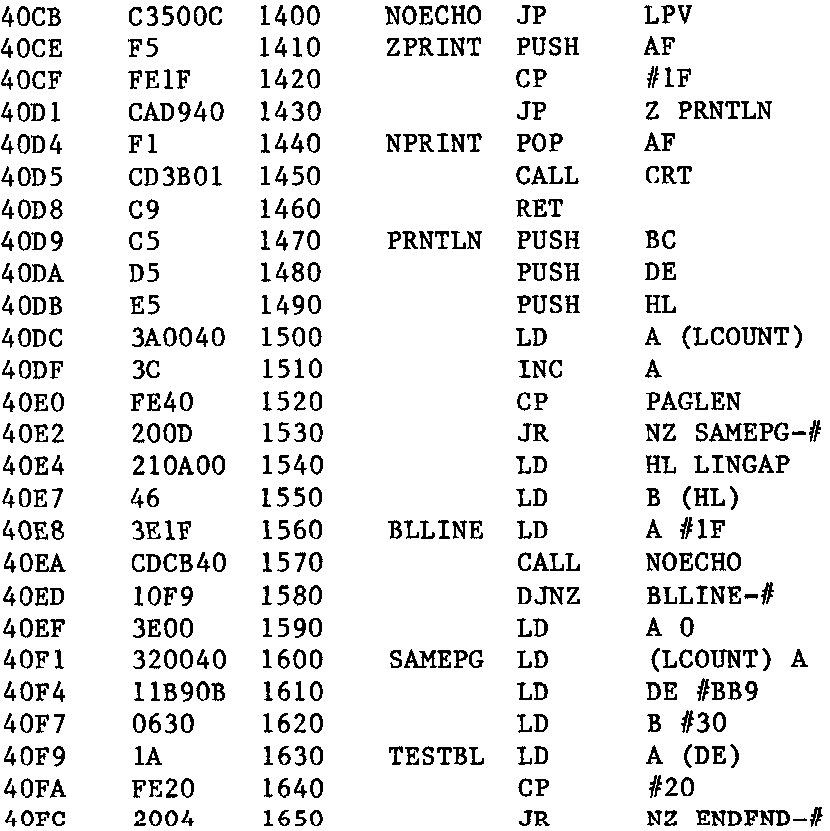

INMC 80 News |
October–December 1981 · Issue 5 |
| Page 10 of 71 |
|---|
I was encouraged to read Len Ford’s contribution (INMC80 Issue 3) since it suggested I was not after all the only NASCOMer still relying on the T4 monitor. Financial constraints also guided me towards the Creed 7B teleprinter to obtain that essential hardcopy output. I am writing in case there are other users who had not yet succeeded in directing assembler listings from ZEAP to the printer.
The version of ZEAP I use is an early one, 1.1 in fact, on tape, which loads at 0F00. My printer driver software is a modified version of CREOUT published in PCW April 79. The printer is connected via a spare bit in port 0 on the Nascom 1. CREOUT takes an ASCII character in register A, translates it to Baudot code and outputs the appropriate bit pattern to Port 0.
ZEAP 1.1 changes the CRT reflection at 0C4B from 013B in the T4 monitor to 18E1. This piece of coding calls the monitor CRT to print the contents of A after first checking A >= 1D.
Not all writing to the screen is done through calls to this reflection, however, e.g. 1803 CALL Z,013B. And not all information is written to the screen through 013B e.g. the line numbers, which are stored in hex are printed using a CALL to monitor 0232 in location 1458. My requirement was to direct assembled listings from ZEAP to the CREED teleprinter. To do this I use a print routine which takes complete lines from the bottom of the screen rather than individual characters. This takes advantage of the fact that all instructions to scroll up the display are handled through 18E5 CALL 013B. We can examine A at this point and if it is 1F (CRLF) the display is about to be scrolled up. In that case the bottom line on the screen is copied to the printer before the scroll is performed.
I enclose the section of my printer driver program which deals with this procedure.
Having loaded ZEAP replace the contents of 18E6 and 18E7 by the address of the new routine ZPRINT. ZPRINT activates the printer by the jump to LPV at line 1400 which prints the character in A. ZPRINT also tests for and ignores trailing blanks and paginates the output.
| Page 10 of 71 |
|---|